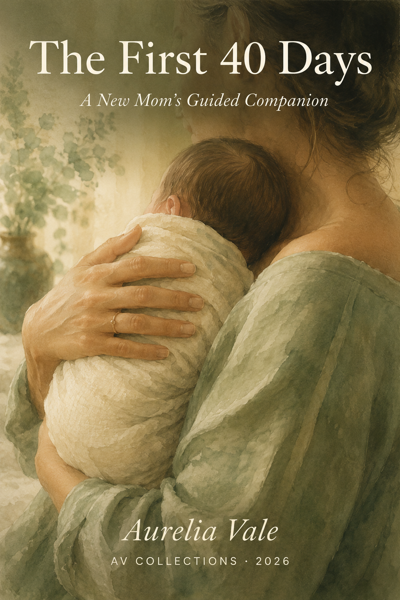

Day by day, through the tenderness and the exhaustion,
the wonder and the uncertainty — you are not alone.
The first forty days after birth are like no other time in a woman's life. Your body is healing. Your heart is full and overwhelmed at once. Everything has changed, and no one quite prepared you for how quietly enormous this transformation would be.
This companion walks beside you — one day at a time. Not with clinical checklists or generic advice, but with warmth, honesty, and the kind of guidance that feels like a wise friend sitting with you over a warm drink.
Written by a grandmother who has witnessed this journey up close, and who believes that every new mother deserves to feel seen, supported, and never alone.